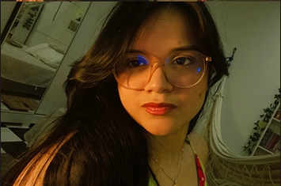
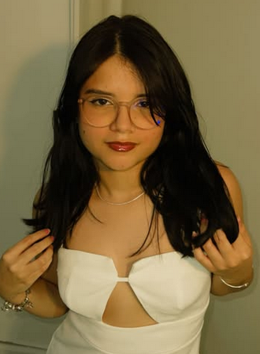
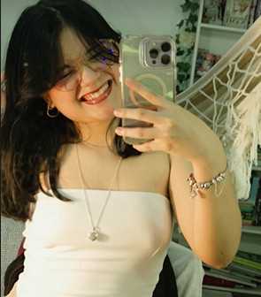
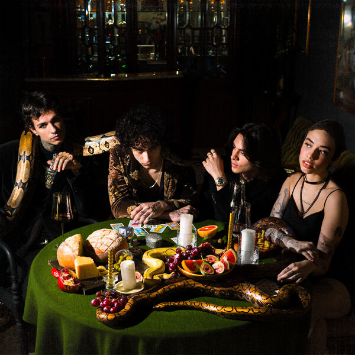
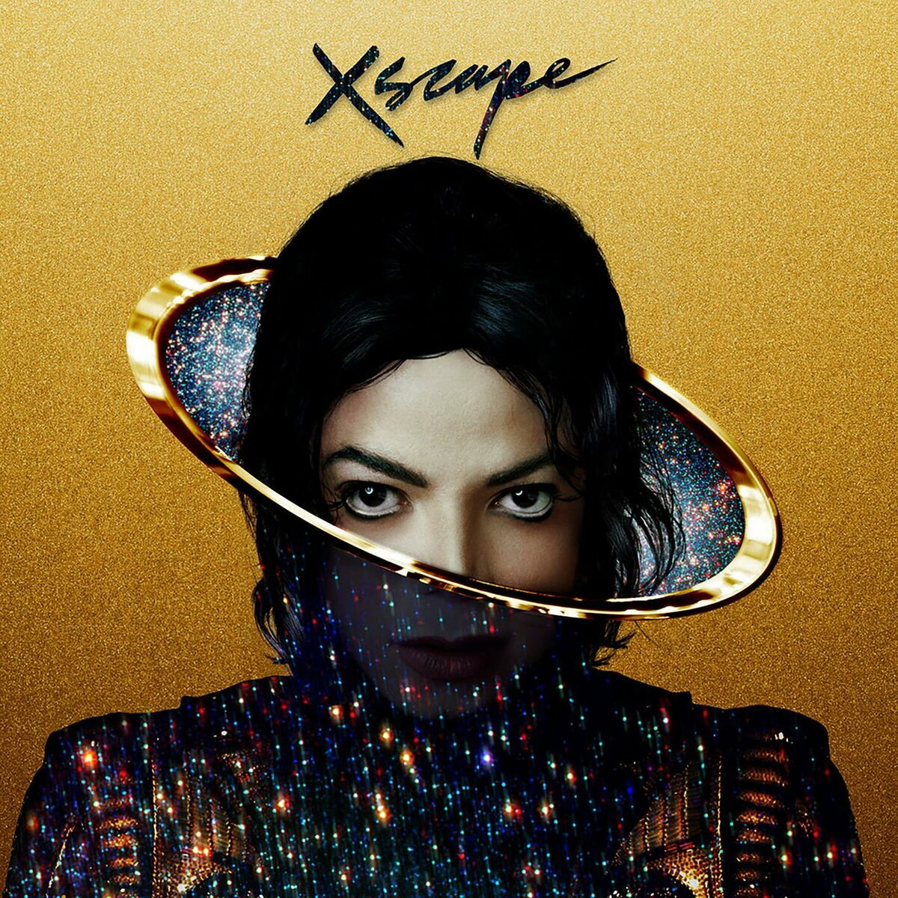
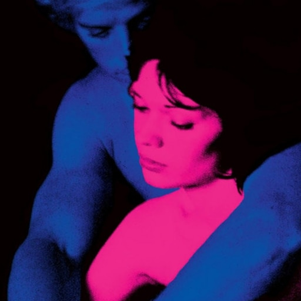
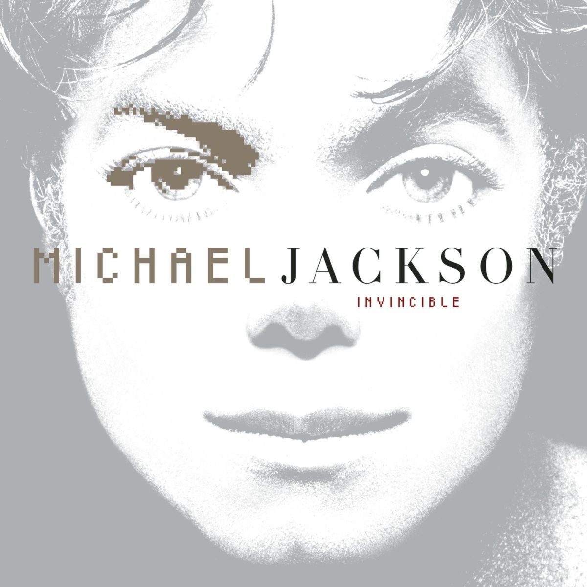

𝑬𝒗𝒆𝒍𝒚𝒏 💙
𝑭𝒊𝒛 𝒊𝒔𝒔𝒐 𝒄𝒐𝒎𝒐 𝒖𝒎 𝒍𝒆𝒎𝒃𝒓𝒆𝒕𝒆 𝒅𝒐 𝒒𝒖𝒂̃𝒐 𝒆𝒔𝒑𝒆𝒄𝒊𝒂𝒍 𝒗𝒐𝒄𝒆̂ 𝒆́ 𝒑𝒓𝒂 𝒎𝒊𝒎.
𝑫𝒆𝒔𝒅𝒆 𝒒𝒖𝒂𝒏𝒅𝒐 𝒏𝒐𝒔 𝒂𝒑𝒓𝒐𝒙𝒊𝒎𝒂𝒎𝒐𝒔, 𝒎𝒊𝒏𝒉𝒂 𝒗𝒊𝒅𝒂 𝒕𝒐𝒎𝒐𝒖 𝒗𝒊𝒓𝒐𝒖 𝒅𝒆 𝒄𝒂𝒃𝒆𝒄̧𝒂 𝒑𝒓𝒂 𝒃𝒂𝒊𝒙𝒐, 𝒎𝒂𝒔 𝒏𝒂̃𝒐 𝒏𝒐 𝒔𝒆𝒏𝒕𝒊𝒅𝒐 𝒓𝒖𝒊𝒎, 𝒑𝒆𝒍𝒐 𝒄𝒐𝒏𝒕𝒓𝒂́𝒓𝒊𝒐, 𝒆𝒍𝒂 𝒎𝒆𝒍𝒉𝒐𝒓𝒐𝒖 𝒎𝒖𝒊𝒕𝒐. 𝑬𝒖 𝒕𝒆 𝒂𝒎𝒐 𝒕𝒂𝒏𝒕𝒐 𝒆 𝒔𝒐𝒖 𝒎𝒖𝒊𝒕𝒐 𝒇𝒆𝒍𝒊𝒛 𝒆 𝒈𝒓𝒂𝒕𝒐 𝒑𝒐𝒓 𝒊𝒔𝒔𝒐. 𝑽𝒐𝒄𝒆̂ 𝒔𝒆 𝒕𝒐𝒓𝒏𝒐𝒖 𝒐 𝒎𝒐𝒎𝒆𝒏𝒕𝒐 𝒎𝒂𝒊𝒔 𝒊𝒎𝒑𝒐𝒓𝒕𝒂𝒏𝒕𝒆 𝒅𝒐 𝒎𝒆𝒖 𝒅𝒊𝒂, 𝒂𝒔 𝒉𝒐𝒓𝒂𝒔 𝒔𝒆𝒎 𝒗𝒐𝒄𝒆̂ 𝒑𝒂𝒔𝒔𝒂𝒎 𝒅𝒆 𝒖𝒎𝒂 𝒇𝒐𝒓𝒎𝒂 𝒕𝒐𝒓𝒕𝒖𝒓𝒂𝒏𝒕𝒆, 𝒔𝒆𝒎 𝒓𝒊𝒔𝒂𝒅𝒂𝒔, 𝒔𝒆𝒎 𝒂𝒍𝒆𝒈𝒓𝒊𝒂, 𝒔𝒆𝒎 𝒆𝒎𝒐𝒄̧𝒂̃𝒐, 𝒔𝒆𝒎 𝒏𝒂𝒅𝒂, 𝒂𝒑𝒆𝒏𝒂𝒔 𝒖𝒎𝒂 𝒆𝒙𝒊𝒔𝒕𝒆̂𝒏𝒄𝒊𝒂 𝒗𝒂𝒈𝒂 𝒆 𝒆𝒏𝒕𝒆𝒅𝒊𝒂𝒏𝒕𝒆. 𝑴𝒂𝒔 𝒒𝒖𝒂𝒏𝒅𝒐 𝒆𝒖 𝒓𝒆𝒄𝒆𝒃𝒐 𝒎𝒆𝒏𝒔𝒂𝒈𝒆𝒎 𝒔𝒖𝒂 𝒐𝒖 𝒑𝒆𝒓𝒄𝒆𝒃𝒐 𝒒𝒖𝒆 𝒆𝒔𝒕𝒂́ 𝒄𝒉𝒆𝒈𝒂𝒏𝒅𝒐 𝒂 𝒉𝒐𝒓𝒂 𝒅𝒂𝒔 𝒏𝒐𝒔𝒔𝒂𝒔 𝒄𝒂𝒍𝒍𝒔, 𝒆𝒖 𝒋𝒂́ 𝒎𝒆 𝒂𝒏𝒊𝒎𝒐 𝒏𝒐𝒗𝒂𝒎𝒆𝒏𝒕𝒆, 𝒆𝒖 𝒋𝒂 𝒎𝒆 𝒅𝒆𝒔𝒑𝒆𝒓𝒕𝒐, 𝒎𝒆𝒖 𝒄𝒂𝒏𝒔𝒂𝒄̧𝒐 𝒔𝒐𝒎𝒆 𝒆 𝒆́ 𝒔𝒖𝒃𝒔𝒕𝒊𝒕𝒖𝒊́𝒅𝒐 𝒑𝒐𝒓 𝒖𝒎 𝒄𝒐𝒏𝒇𝒐𝒓𝒕𝒐 𝒆𝒏𝒐𝒓𝒎𝒆 𝒅𝒆 𝒇𝒊𝒏𝒂𝒍𝒎𝒆𝒏𝒕𝒆 𝒑𝒐𝒅𝒆𝒓 𝒆𝒔𝒒𝒖𝒆𝒄𝒆𝒓 𝒅𝒆 𝒕𝒖𝒅𝒐 𝒂𝒐 𝒎𝒆𝒖 𝒓𝒆𝒅𝒐𝒓 𝒑𝒓𝒂 𝒅𝒆𝒅𝒊𝒄𝒂𝒓 𝒂 𝒂𝒒𝒖𝒆𝒍𝒆 𝒎𝒐𝒎𝒆𝒏𝒕𝒐, 𝒎𝒐𝒎𝒆𝒏𝒕𝒐 𝒆𝒔𝒔𝒆 𝒒𝒖𝒆 𝒎𝒆 𝒇𝒂𝒛 𝒆𝒔𝒒𝒖𝒆𝒄𝒆𝒓 𝒅𝒐 𝒎𝒖𝒏𝒅𝒐 𝒍𝒂́ 𝒇𝒐𝒓𝒂 𝒆 𝒅𝒆 𝒒𝒖𝒂𝒍𝒒𝒖𝒆𝒓 𝒄𝒐𝒎𝒑𝒍𝒊𝒄𝒂𝒄̧𝒂̃𝒐 𝒒𝒖𝒆 𝒎𝒆 𝒄𝒆𝒓𝒄𝒂. 𝑻𝒖𝒅𝒐 𝒈𝒂𝒏𝒉𝒂 𝒄𝒐𝒓, 𝒕𝒖𝒅𝒐 𝒈𝒂𝒏𝒉𝒂 𝒗𝒊𝒅𝒂 𝒄𝒐𝒎 𝒗𝒐𝒄𝒆̂, 𝒐 𝒎𝒖𝒏𝒅𝒐 𝒏𝒂̃𝒐 𝒑𝒂𝒓𝒆𝒄𝒆 𝒗𝒂𝒈𝒐, 𝒂𝒔 𝒓𝒊𝒔𝒂𝒅𝒂𝒔 𝒏𝒂̃𝒐 𝒔𝒐𝒂𝒎 𝒇𝒐𝒓𝒄̧𝒂𝒅𝒂𝒔 𝒐𝒖 𝒆𝒓𝒓𝒂𝒅𝒂𝒔, 𝒕𝒖𝒅𝒐 𝒔𝒐𝒂 𝒕𝒂̃𝒐 𝒓𝒆𝒂𝒍 𝒆 𝒕𝒂̃𝒐 𝒃𝒐𝒎 𝒆 𝒊𝒔𝒔𝒐 𝒎𝒆 𝒅𝒆𝒊𝒙𝒂 𝒎𝒖𝒊𝒕𝒐 𝒇𝒆𝒍𝒊𝒛, 𝒕𝒐𝒅𝒐 𝒅𝒊𝒂. 𝑽𝒐𝒄𝒆̂ 𝒆́ 𝒐 𝒎𝒆𝒖 𝒔𝒐𝒓𝒓𝒊𝒔𝒐 𝒅𝒊𝒂́𝒓𝒊𝒐, 𝒔𝒖𝒂𝒔 𝒎𝒆𝒏𝒔𝒂𝒈𝒆𝒏𝒔 𝒆 𝒏𝒐𝒔𝒔𝒂𝒔 𝒄𝒂𝒍𝒍𝒔 𝒔𝒂̃𝒐 𝒎𝒆𝒖 𝒔𝒖𝒔𝒑𝒊𝒓𝒐 𝒅𝒆 𝒂𝒍𝒊́𝒗𝒊𝒐, 𝒔𝒂̃𝒐 𝒐 𝒎𝒐𝒎𝒆𝒏𝒕𝒐 𝒒𝒖𝒆 𝒆𝒖 𝒎𝒂𝒊𝒔 𝒈𝒐𝒔𝒕𝒐 𝒅𝒐 𝒎𝒆𝒖 𝒅𝒊𝒂. 𝑬𝒖 𝒕𝒆 𝒂𝒎𝒐 𝒎𝒖𝒊𝒕𝒐, 𝒎𝒆𝒖 𝒂𝒎𝒐𝒓, 𝒆 𝒏𝒂̃𝒐 𝒔𝒆𝒊 𝒒𝒖𝒆 𝒓𝒖𝒎𝒐 𝒆𝒖 𝒕𝒐𝒎𝒂𝒓𝒊𝒂 𝒔𝒆 𝒏𝒂̃𝒐 𝒇𝒐𝒔𝒔𝒆 𝒗𝒐𝒄𝒆̂ 𝒏𝒂 𝒎𝒊𝒏𝒉𝒂 𝒗𝒊𝒅𝒂, 𝒔𝒆 𝒏𝒂̃𝒐 𝒇𝒐𝒔𝒔𝒆 𝒂 𝒔𝒖𝒂 𝒗𝒐𝒛 𝒎𝒆 𝒄𝒐𝒏𝒇𝒐𝒓𝒕𝒂𝒏𝒅𝒐, 𝒔𝒆 𝒏𝒂̃𝒐 𝒇𝒐𝒔𝒔𝒆 𝒂 𝒔𝒖𝒂 𝒂𝒍𝒆𝒈𝒓𝒊𝒂 𝒆 𝒔𝒆𝒖 𝒓𝒊𝒔𝒐 𝒎𝒆 𝒄𝒐𝒕𝒂𝒈𝒊𝒂𝒏𝒅𝒐 𝒆 𝒎𝒆 𝒂𝒍𝒆𝒈𝒓𝒂𝒏𝒅𝒐. 𝑶𝒃𝒓𝒊𝒈𝒂𝒅𝒐 𝒑𝒐𝒓 𝒆𝒙𝒊𝒔𝒕𝒊𝒓 𝒏𝒂 𝒎𝒊𝒏𝒉𝒂 𝒗𝒊𝒅𝒂, 𝒔𝒐𝒖 𝒎𝒖𝒊𝒕𝒐 𝒈𝒓𝒂𝒕𝒐 𝒆 𝒕𝒂𝒎𝒃𝒆́𝒎 𝒐 𝒉𝒐𝒎𝒆𝒎 𝒎𝒂𝒊𝒔 𝒇𝒆𝒍𝒊𝒛 𝒅𝒐 𝒎𝒖𝒏𝒅𝒐 𝒑𝒐𝒓 𝒕𝒆𝒓 𝒆𝒔𝒔𝒆 𝒑𝒓𝒊𝒗𝒊𝒍𝒆́𝒈𝒊𝒐. 𝑬𝑼 𝑻𝑬 𝑨𝑴𝑶!
𝑨𝒒𝒖𝒊 𝒔𝒆𝒑𝒂𝒓𝒆𝒊 𝒂𝒔 𝒇𝒐𝒕𝒐𝒔 𝒒𝒖𝒆 𝒆𝒖 𝒎𝒂𝒊𝒔 𝒂𝒎𝒐. 𝑬𝒖 𝒒𝒖𝒆𝒓𝒊𝒂 𝒑𝒐𝒅𝒆𝒓 𝒄𝒐𝒍𝒐𝒄𝒂𝒓 𝒇𝒐𝒕𝒐𝒔 𝒏𝒐𝒔𝒔𝒂𝒔 𝒋𝒖𝒏𝒕𝒐𝒔 𝒂𝒒𝒖𝒊 𝒎𝒂𝒔 𝒊𝒏𝒇𝒆𝒍𝒊𝒛𝒎𝒆𝒏𝒕𝒆 𝒏𝒂̃𝒐 𝒑𝒐𝒔𝒔𝒐 𝒂𝒊𝒏𝒅𝒂 :(

💙
𝑬𝒔𝒔𝒂 𝒆́ 𝒖𝒎𝒂 𝒅𝒂𝒔 𝒔𝒆𝒏𝒂̃𝒐 𝒂 𝒎𝒊𝒏𝒉𝒂 𝒇𝒂𝒗𝒐𝒓𝒊𝒕𝒂, 𝒆𝒖 𝒔𝒆𝒊 𝒒𝒖𝒆 𝒗𝒐𝒄𝒆̂ 𝒏𝒂̃𝒐 𝒈𝒐𝒔𝒕𝒂 𝒅𝒆𝒍𝒂, 𝒎𝒂𝒔 𝒐 𝒋𝒆𝒊𝒕𝒐 𝒒𝒖𝒆 𝒆𝒖 𝒔𝒐𝒖 𝒂𝒑𝒂𝒊𝒙𝒐𝒏𝒂𝒅𝒐 𝒑𝒆𝒍𝒐 𝒔𝒆𝒖 𝒐𝒍𝒉𝒂𝒓 𝒏𝒆𝒔𝒔𝒂 𝒇𝒐𝒕𝒐 𝒏𝒂̃𝒐 𝒕𝒂́ 𝒆𝒔𝒄𝒓𝒊𝒕𝒐. 𝑬𝒔𝒔𝒂 𝒇𝒐𝒕𝒐 𝒄𝒐𝒏𝒔𝒆𝒈𝒖𝒆 𝒎𝒆 𝒕𝒐𝒄𝒂𝒓 𝒏𝒂 𝒂𝒍𝒎𝒂, 𝒔𝒆𝒖 𝒐𝒍𝒉𝒂𝒓 𝒇𝒊𝒄𝒂 𝒕𝒊𝒑𝒐 𝒖𝒎𝒂 𝒃𝒂𝒍𝒂 𝒒𝒖𝒆 𝒂𝒕𝒓𝒂𝒗𝒆𝒔𝒔𝒂 𝒂 𝒎𝒊𝒏𝒉𝒂 𝒕𝒆𝒍𝒂 𝒆 𝒗𝒂𝒊 𝒅𝒊𝒓𝒆𝒕𝒐 𝒆𝒎 𝒎𝒊𝒎. 𝑬𝒖 𝒇𝒊𝒄𝒐 𝒉𝒊𝒑𝒏𝒐𝒕𝒊𝒛𝒂𝒅𝒐 𝒑𝒐𝒓 𝒖𝒎 𝒃𝒐𝒎 𝒕𝒆𝒎𝒑𝒐 𝒔𝒐𝒎𝒆𝒏𝒕𝒆 𝒂𝒅𝒎𝒊𝒓𝒂𝒏𝒅𝒐 𝒆 𝒆𝒏𝒄𝒂𝒏𝒕𝒂𝒅𝒐 𝒄𝒐𝒎 𝒒𝒖𝒂̃𝒐 𝒍𝒊𝒏𝒅𝒐 𝒆 𝒎𝒂𝒓𝒄𝒂𝒏𝒕𝒆 𝒐 𝒔𝒆𝒖 𝒐𝒍𝒉𝒂𝒓 𝒆́.

💙
𝑬𝒔𝒔𝒂 𝒇𝒐𝒕𝒐 𝒆𝒖 𝒂𝒅𝒐𝒓𝒐 𝒐𝒍𝒉𝒂𝒓 𝒒𝒖𝒂𝒏𝒅𝒐 𝒆𝒔𝒕𝒐𝒖 𝒎𝒆𝒊𝒐 𝒕𝒓𝒊𝒔𝒕𝒆 𝒐𝒖 𝒅𝒆𝒔𝒂𝒏𝒊𝒎𝒂𝒅𝒐, 𝒐𝒍𝒉𝒂𝒓 𝒐 𝒔𝒆𝒖 𝒔𝒐𝒓𝒓𝒊𝒔𝒐 𝒔𝒆𝒎𝒑𝒓𝒆 𝒗𝒂𝒊 𝒎𝒆 𝒂𝒓𝒓𝒂𝒏𝒄𝒂𝒓 𝒖𝒎 𝒔𝒐𝒓𝒓𝒊𝒔𝒐 𝒎𝒆𝒖. 𝑬́ 𝒆𝒏𝒄𝒂𝒏𝒕𝒂𝒅𝒐𝒓 𝒐𝒃𝒔𝒆𝒓𝒗𝒂𝒓 𝒆𝒍𝒆, 𝒆́ 𝒕𝒂̃𝒐 𝒍𝒊𝒏𝒅𝒐 𝒆 𝒇𝒐𝒇𝒐, 𝒆𝒖 𝒂𝒎𝒐 𝒎𝒖𝒊𝒕𝒐 𝒆𝒍𝒆 𝒆 𝒂 𝒔𝒆𝒏𝒔𝒂𝒄̧𝒂̃𝒐 𝒒𝒖𝒆 𝒅𝒆 𝒄𝒐𝒏𝒇𝒐𝒓𝒕𝒐 𝒒𝒖𝒆 𝒎𝒆 𝒕𝒓𝒂𝒛.

💙
𝑬𝒔𝒔𝒆 𝒗𝒊́𝒅𝒆𝒐 𝒆𝒏𝒕𝒓𝒂 𝒏𝒐 𝒕𝒐́𝒑𝒊𝒄𝒐 "𝑴𝒆 𝒅𝒂 𝒖𝒎𝒂 𝒄𝒐𝒊𝒔𝒂", 𝒔𝒆𝒎𝒑𝒓𝒆 𝒒𝒖𝒆 𝒆𝒖 𝒗𝒆𝒋𝒐 𝒆𝒔𝒔𝒆 𝒗𝒊́𝒅𝒆𝒐 𝒏𝒂̃𝒐 𝒄𝒐𝒏𝒔𝒊𝒈𝒐 𝒏𝒂̃𝒐 𝒓𝒆𝒑𝒂𝒓𝒂𝒓 𝒐 𝒒𝒖𝒂̃𝒐 𝒍𝒊𝒏𝒅𝒐 𝒐 𝒔𝒆𝒖 𝒄𝒐𝒓𝒑𝒐 𝒇𝒊𝒄𝒂 𝒏𝒆𝒔𝒔𝒆 𝒗𝒆𝒔𝒕𝒊𝒅𝒐, 𝒄𝒂𝒅𝒂 𝒄𝒖𝒓𝒗𝒂 𝒅𝒐 𝒔𝒆𝒖 𝒄𝒐𝒓𝒑𝒐 𝒇𝒊𝒄𝒂 𝒕𝒂̃𝒐 𝒂𝒑𝒂𝒓𝒆𝒏𝒕𝒆 𝒆 𝒅𝒆𝒔𝒕𝒂𝒄𝒂𝒅𝒐 𝒆 𝒆́ 𝒇𝒆𝒏𝒐𝒎𝒆𝒏𝒂𝒍 𝒐 𝒒𝒖𝒂𝒏𝒕𝒐 𝒗𝒐𝒄𝒆̂ 𝒄𝒐𝒏𝒔𝒆𝒈𝒖𝒆 𝒔𝒆𝒓 𝒍𝒊𝒏𝒅𝒂 𝒆 𝒑𝒆𝒓𝒇𝒆𝒊𝒕𝒂 𝒆𝒎 𝒕𝒐𝒅𝒐𝒔 𝒂𝒔𝒑𝒆𝒄𝒕𝒐𝒔 𝒇𝒊́𝒔𝒊𝒄𝒐𝒔.
💙
𝑴𝒆𝒖 𝒂𝒎𝒐𝒓 𝒎𝒆 𝒎𝒂𝒏𝒅𝒂𝒏𝒅𝒐 𝒃𝒆𝒊𝒋𝒊𝒏𝒉𝒐 😭 𝒆𝒖 𝒂𝒎𝒐 𝒆𝒔𝒔𝒆 𝒗𝒊́𝒅𝒆𝒐
𝑨𝒒𝒖𝒊 𝒆́ 𝒐 𝒄𝒂𝒏𝒕𝒊𝒏𝒉𝒐 𝒐𝒏𝒅𝒆 𝒅𝒆𝒊𝒙𝒆𝒊 𝒂𝒔 𝒎𝒖́𝒔𝒊𝒄𝒂𝒔 𝒒𝒖𝒆 𝒎𝒆 𝒍𝒆𝒎𝒃𝒓𝒂𝒎 𝒗𝒐𝒄𝒆̂ 𝒆 𝒐 𝒎𝒐𝒕𝒊𝒗𝒐 𝒅𝒆 𝒆𝒖 𝒕𝒆 𝒅𝒆𝒅𝒊𝒄𝒂𝒓 𝒆𝒍𝒂𝒔

𝑨𝒏𝒋𝒐𝒔 - 𝑽𝒆𝒏𝒆𝒓𝒆 𝑽𝒂𝒊 𝑽𝒆𝒏𝒖𝒔
"𝑴𝒆 𝒕𝒊𝒓𝒂 𝒅𝒆𝒔𝒔𝒆 𝒑𝒂𝒊𝒏𝒆𝒍 𝒑𝒓𝒆𝒕𝒐 𝒆 𝒃𝒓𝒂𝒏𝒄𝒐 𝒒𝒖𝒆 𝒆𝒖 𝒎𝒆 𝒆𝒔𝒒𝒖𝒆𝒄̧𝒐 𝒅𝒆 𝒕𝒐𝒅𝒐𝒔 𝒐𝒖𝒕𝒓𝒐𝒔 𝒑𝒍𝒂𝒏𝒐𝒔..." 𝑬𝒔𝒔𝒆 𝒕𝒓𝒆𝒄𝒉𝒐 𝒅𝒆𝒔𝒄𝒓𝒆𝒗𝒆 𝒐 𝒔𝒆𝒏𝒕𝒊𝒎𝒆𝒏𝒕𝒐 𝒒𝒖𝒆 𝒆𝒖 𝒕𝒊𝒗𝒆 𝒒𝒖𝒂𝒏𝒅𝒐 𝒗𝒐𝒄𝒆̂ 𝒂𝒑𝒂𝒓𝒆𝒄𝒆𝒖 𝒏𝒂 𝒎𝒊𝒏𝒉𝒂 𝒗𝒊𝒅𝒂. 𝑨𝒏𝒕𝒆𝒔 𝒅𝒆 𝒗𝒐𝒄𝒆̂, 𝒎𝒊𝒏𝒉𝒂 𝒗𝒊𝒅𝒂 𝒆𝒓𝒂 𝒖𝒎 𝒑𝒂𝒊𝒏𝒆𝒍 𝒑𝒓𝒆𝒕𝒐 𝒆 𝒃𝒓𝒂𝒏𝒄𝒐, 𝒖𝒎𝒂 𝒑𝒊𝒏𝒕𝒖𝒓𝒂 𝒔𝒆𝒎 𝒈𝒓𝒂𝒄̧𝒂 𝒆 𝒆𝒎𝒐𝒄̧𝒂̃𝒐. 𝑨𝒕𝒆́ 𝒒𝒖𝒆 𝒗𝒐𝒄𝒆̂ 𝒂𝒑𝒂𝒓𝒆𝒄𝒆𝒖 𝒆 𝒄𝒐𝒍𝒐𝒓𝒊𝒖 𝒆𝒔𝒔𝒆 𝒑𝒂𝒊𝒏𝒆𝒍 𝒔𝒆𝒎 𝒈𝒓𝒂𝒄̧𝒂, 𝒅𝒂𝒏𝒅𝒐 𝒗𝒊𝒅𝒂 𝒆 𝒆𝒎𝒐𝒄̧𝒂̃𝒐, 𝒇𝒂𝒛𝒆𝒏𝒅𝒐 𝒂𝒍𝒈𝒐 𝒒𝒖𝒆 𝒆𝒓𝒂 𝒔𝒆𝒎 𝒈𝒓𝒂𝒄̧𝒂 𝒆𝒎 𝒂𝒍𝒈𝒐 𝒆𝒔𝒑𝒆𝒕𝒂𝒄𝒖𝒍𝒂𝒓, 𝒖𝒎𝒂 𝒐𝒃𝒓𝒂 𝒅𝒆 𝒂𝒓𝒕𝒆 𝒅𝒊𝒈𝒏𝒂 𝒅𝒆 𝑳𝒐𝒖𝒗𝒓𝒆. 𝑨 𝒖́𝒏𝒊𝒄𝒂 𝒅𝒊𝒇𝒆𝒓𝒆𝒏𝒄̧𝒂 𝒆́ 𝒒𝒖𝒆 𝒆𝒖 𝒏𝒂̃𝒐 𝒕𝒊𝒏𝒉𝒂 𝒑𝒍𝒂𝒏𝒐𝒔 𝒑𝒓𝒂 𝒆𝒔𝒒𝒖𝒆𝒄𝒆𝒓, 𝒎𝒂𝒔 𝒗𝒐𝒄𝒆̂ 𝒎𝒆 𝒅𝒆𝒖 𝒆𝒍𝒆𝒔, 𝒎𝒆 𝒅𝒆𝒖 𝒖𝒎 𝒏𝒐𝒓𝒕𝒆 𝒑𝒓𝒂 𝒔𝒆𝒈𝒖𝒊𝒓, 𝒎𝒆 𝒅𝒆𝒖 𝒖𝒎 𝒎𝒐𝒕𝒊𝒗𝒐 𝒑𝒓𝒂 𝒕𝒆𝒓 𝒆 𝒑𝒍𝒂𝒏𝒆𝒋𝒂𝒓 𝒎𝒆𝒖 𝒇𝒖𝒕𝒖𝒓𝒐 𝒄𝒐𝒎 𝒗𝒐𝒄𝒆̂.
"𝑬 𝒆𝒖 𝒏𝒖𝒏𝒄𝒂 𝒕𝒆 𝒃𝒆𝒊𝒋𝒆𝒊, 𝒎𝒂𝒔 𝒆𝒖 𝒔𝒆𝒎𝒑𝒓𝒆 𝒔𝒐𝒏𝒉𝒆𝒊 𝒄𝒐𝒎 𝒆𝒔𝒔𝒆 𝒂𝒎𝒐𝒓... 𝒔𝒊𝒏𝒕𝒐 𝒄𝒐𝒎𝒐 𝒐𝒔 𝒂𝒏𝒋𝒐𝒔, 𝒗𝒐𝒂𝒏𝒅𝒐 𝒆 𝒅𝒆𝒔𝒆𝒋𝒂𝒏𝒅𝒐 𝒐 𝒔𝒆𝒖 𝒂𝒎𝒐𝒓..." 𝑬𝒔𝒔𝒆 𝒓𝒆𝒇𝒓𝒂̃𝒐 𝒆́ 𝒖𝒎𝒂 𝒅𝒆𝒔𝒄𝒓𝒊𝒄̧𝒂̃𝒐 𝒄𝒆𝒓𝒕𝒆𝒊𝒓𝒂. 𝑨𝒑𝒆𝒔𝒂𝒓 𝒅𝒆 𝒊𝒏𝒇𝒆𝒍𝒊𝒛𝒎𝒆𝒏𝒕𝒆 𝒏𝒖𝒏𝒄𝒂 𝒕𝒆𝒓 𝒕𝒊𝒅𝒐 𝒂 𝒄𝒉𝒂𝒏𝒄𝒆 𝒅𝒆 𝒕𝒆 𝒃𝒆𝒊𝒋𝒂𝒓, 𝒕𝒆𝒓 𝒐 𝒔𝒆𝒖 𝒂𝒎𝒐𝒓 𝒂𝒐 𝒎𝒆𝒖 𝒍𝒂𝒅𝒐 𝒔𝒆𝒎𝒑𝒓𝒆 𝒗𝒂𝒊 𝒆𝒔𝒕𝒂𝒓 𝒑𝒓𝒆𝒔𝒆𝒏𝒕𝒆 𝒏𝒐𝒔 𝒎𝒆𝒖𝒔 𝒔𝒐𝒏𝒉𝒐𝒔 𝒆 𝒑𝒍𝒂𝒏𝒐𝒔, 𝒂𝒎𝒐𝒓 𝒆𝒔𝒔𝒆 𝒒𝒖𝒆 𝒆́ 𝒕𝒂̃𝒐 𝒎𝒂𝒓𝒂𝒗𝒊𝒍𝒉𝒐𝒔𝒐 𝒒𝒖𝒆 𝒆́ 𝒅𝒊𝒈𝒏𝒐 𝒅𝒆 𝒔𝒆𝒓 𝒖𝒔𝒂𝒅𝒐 𝒄𝒐𝒎𝒐 𝒓𝒆𝒇𝒆𝒓𝒆̂𝒏𝒄𝒊𝒂 𝒑𝒓𝒂 𝒖𝒎 𝒂́𝒍𝒃𝒖𝒎 𝒎𝒖𝒔𝒊𝒄𝒂𝒍 𝒊𝒏𝒕𝒆𝒊𝒓𝒐 𝒐𝒖 𝒔𝒐𝒏𝒉𝒐 𝒅𝒆 𝒖𝒎 𝒑𝒆𝒓𝒔𝒐𝒏𝒂𝒈𝒆𝒎 𝒅𝒆 𝒍𝒊𝒗𝒓𝒐. 𝑬 𝒆𝒖 𝒎𝒆 𝒔𝒊𝒏𝒕𝒐 𝒂 𝒑𝒆𝒔𝒔𝒐𝒂 𝒎𝒂𝒊𝒔 𝒈𝒓𝒂𝒕𝒂 𝒅𝒐 𝒎𝒖𝒏𝒅𝒐 𝒑𝒐𝒓 𝒕𝒆𝒓 𝒂 𝒉𝒐𝒏𝒓𝒂 𝒅𝒐 𝒔𝒆𝒖 𝒂𝒎𝒐𝒓 𝒂𝒐 𝒎𝒆𝒖 𝒍𝒂𝒅𝒐.

𝑪𝒉𝒊𝒄𝒂𝒈𝒐 - 𝑴𝒊𝒄𝒉𝒂𝒆𝒍 𝑱𝒂𝒄𝒌𝒔𝒐𝒏
"𝑺𝒉𝒆𝒔 𝒔𝒎𝒊𝒍𝒆𝒅 𝒂𝒏𝒅 𝒍𝒐𝒐𝒌𝒆𝒅 𝒂𝒕 𝒎𝒆 𝒂𝒏𝒅 𝒊 𝒘𝒂𝒔 𝒔𝒖𝒓𝒑𝒓𝒊𝒔𝒆𝒅 𝒕𝒐 𝒔𝒆𝒆 𝒕𝒉𝒂𝒕 𝒂 𝒘𝒐𝒎𝒂𝒏 𝒍𝒊𝒌𝒆 𝒕𝒉𝒂𝒕 𝒓𝒆𝒂𝒍𝒍𝒚 𝒊𝒏𝒕𝒐 𝒎𝒆..." 𝑨𝒔𝒔𝒊𝒎 𝒄𝒐𝒎𝒐 𝑴𝒊𝒄𝒉𝒂𝒆𝒍 𝒔𝒆 𝒔𝒆𝒏𝒕𝒊𝒖 𝒄𝒐𝒎 𝒂 𝒈𝒂𝒓𝒐𝒕𝒂 𝒅𝒆 𝒄𝒉𝒊𝒄𝒂𝒈𝒐 𝒆𝒖 𝒕𝒂𝒎𝒃𝒆́𝒎 𝒎𝒆 𝒔𝒊𝒏𝒕𝒐, 𝒇𝒊𝒄𝒐 𝒔𝒖𝒓𝒑𝒓𝒆𝒔𝒐 𝒔𝒆𝒎𝒑𝒓𝒆 𝒒𝒖𝒆 𝒍𝒆𝒎𝒃𝒓𝒐 𝒒𝒖𝒆 𝒖𝒎𝒂 𝒎𝒖𝒍𝒉𝒆𝒓 𝒕𝒂̃𝒐 𝒊𝒏𝒄𝒓𝒊́𝒗𝒆𝒍 𝒆𝒔𝒕𝒂́ 𝒊𝒏𝒕𝒆𝒓𝒆𝒔𝒔𝒂𝒅𝒂 𝒑𝒐𝒓 𝒎𝒊𝒎. 𝑬𝒖 𝒎𝒆 𝒔𝒊𝒏𝒕𝒐 𝒕𝒂̃𝒐 𝒈𝒓𝒂𝒕𝒐 𝒆 𝒇𝒆𝒍𝒊𝒛 𝒑𝒐𝒓 𝒕𝒆𝒓 𝒗𝒐𝒄𝒆̂, 𝒎𝒊𝒏𝒉𝒂 𝒎𝒖𝒍𝒉𝒆𝒓, 𝒂𝒐 𝒎𝒆𝒖 𝒍𝒂𝒅𝒐.
"𝑰𝒕 𝒇𝒆𝒍𝒕 𝒔𝒐 𝒓𝒆𝒂𝒍 𝒕𝒐 𝒎𝒆, 𝒕𝒉𝒊𝒔 𝒈𝒊𝒓𝒍 𝒔𝒉𝒆 𝒉𝒂𝒅 𝒕𝒐 𝒃𝒆 𝒂𝒏 𝒂𝒏𝒈𝒆𝒍 𝒔𝒆𝒏𝒕 𝒇𝒓𝒐𝒎 𝑯𝒆𝒂𝒗𝒆𝒏 𝒋𝒖𝒔𝒕 𝒇𝒐𝒓 𝒎𝒆..." 𝑬 𝒂𝒔𝒔𝒊𝒎 𝒄𝒐𝒎𝒐 𝒎𝒆𝒏𝒄𝒊𝒐𝒏𝒆𝒊 𝒂𝒏𝒕𝒆𝒔, 𝒆𝒔𝒔𝒂 𝒇𝒆𝒍𝒊𝒄𝒊𝒅𝒂𝒅𝒆 𝒆́ 𝒕𝒂̃𝒐 𝒓𝒆𝒂𝒍 𝒆 𝒇𝒐𝒓𝒕𝒆 𝒒𝒖𝒆 𝒆𝒖 𝒑𝒆𝒏𝒔𝒐 𝒒𝒖𝒆 𝒗𝒐𝒄𝒆̂ 𝒇𝒐𝒊 𝒆𝒏𝒗𝒊𝒂𝒅𝒂 𝒑𝒓𝒂 𝒎𝒊𝒎 𝒑𝒐𝒓 𝒂𝒍𝒈𝒐 𝒅𝒊𝒗𝒊𝒏𝒐, 𝒑𝒐𝒓 𝒂𝒍𝒈𝒐 𝒒𝒖𝒆 𝒏𝒂̃𝒐 𝒑𝒐𝒅𝒆 𝒔𝒆𝒓 𝒆𝒙𝒑𝒍𝒊𝒄𝒂𝒅𝒐 𝒑𝒐𝒓 𝒖𝒎 𝒔𝒆𝒓 𝒉𝒖𝒎𝒂𝒏𝒐 𝒄𝒐𝒎𝒖𝒎, 𝒆 𝒂𝒔𝒔𝒊𝒎 𝒄𝒐𝒎𝒐 𝑴𝒊𝒄𝒉𝒂𝒆𝒍, 𝒆𝒖 𝒕𝒂𝒎𝒃𝒆́𝒎 𝒎𝒆 𝒆𝒏𝒄𝒐𝒕𝒓𝒂𝒗𝒂 𝒔𝒐𝒛𝒊𝒏𝒉𝒐 𝒆 𝒑𝒆𝒓𝒅𝒊𝒅𝒐, 𝒎𝒂𝒔 𝒒𝒖𝒂𝒏𝒅𝒐 𝒆𝒖 𝒕𝒆 𝒄𝒐𝒏𝒉𝒆𝒄𝒊 𝒆𝒖 𝒑𝒖𝒅𝒆 𝒕𝒆𝒓 𝒄𝒆𝒓𝒕𝒆𝒛𝒂 𝒒𝒖𝒆 𝒔𝒊𝒎, 𝒆𝒓𝒂 𝒖𝒎 𝒑𝒓𝒆𝒔𝒆𝒏𝒕𝒆 𝒅𝒊𝒗𝒊𝒏𝒐 𝒑𝒓𝒂 𝒎𝒊𝒎, 𝒑𝒐𝒅𝒆𝒓 𝒕𝒆𝒓 𝒐 𝒂𝒏𝒋𝒐 𝒎𝒂𝒊𝒔 𝒃𝒆𝒎 𝒇𝒆𝒊𝒕𝒐 𝒅𝒐 𝒑𝒂𝒓𝒂𝒊́𝒔𝒐, 𝒂 𝒄𝒓𝒊𝒂𝒄̧𝒂̃𝒐 𝒆𝒙𝒆𝒎𝒑𝒍𝒂𝒓 𝒆 𝒆𝒙𝒄𝒆𝒑𝒄𝒊𝒐𝒏𝒂𝒍, 𝒂 𝒃𝒆𝒍𝒆𝒛𝒂 𝒆𝒎 𝒔𝒖𝒂 𝒇𝒐𝒓𝒎𝒂 𝒎𝒂𝒊𝒔 𝒑𝒖𝒓𝒂, 𝒂 𝒑𝒆𝒓𝒔𝒐𝒏𝒊𝒇𝒊𝒄𝒂𝒄̧𝒂̃𝒐 𝒅𝒆 𝒖𝒎𝒂 𝒍𝒖𝒛 𝒈𝒖𝒊𝒂, 𝒂𝒍𝒈𝒖𝒆́𝒎 𝒒𝒖𝒆 𝒄𝒐𝒏𝒔𝒆𝒈𝒖𝒊𝒖 𝒎𝒆 𝒈𝒖𝒊𝒂𝒓 𝒆𝒏𝒕𝒓𝒆 𝒂𝒔 𝒓𝒖𝒂𝒔 𝒆𝒔𝒄𝒖𝒓𝒂𝒔 𝒆 𝒊𝒏𝒕𝒆𝒓𝒎𝒊𝒏𝒂́𝒗𝒆𝒊𝒔 𝒅𝒆𝒔𝒔𝒂 𝒅𝒆𝒔𝒄𝒓𝒊𝒕𝒂 𝒄𝒉𝒊𝒄𝒂𝒈𝒐 𝒐𝒏𝒅𝒆 𝒆𝒖 𝒎𝒆 𝒆𝒏𝒄𝒐𝒏𝒕𝒓𝒂𝒗𝒂.

𝑳𝒐𝒗𝒆𝒓𝒔 𝑹𝒐𝒄𝒌 - 𝑻𝑽 𝑮𝒊𝒓𝒍
𝑬𝒖 𝒎𝒆 𝒂𝒑𝒓𝒐𝒙𝒊𝒎𝒆𝒊 𝒎𝒂𝒊𝒔 𝒅𝒆𝒔𝒔𝒂 𝒎𝒖́𝒔𝒊𝒄𝒂 𝒆 𝒅𝒆 𝑻𝑽 𝑮𝒊𝒓𝒍 𝒑𝒐𝒓 𝒗𝒐𝒄𝒆̂, 𝒑𝒐𝒓 𝒗𝒆𝒓 𝒗𝒐𝒄𝒆̂ 𝒔𝒆𝒎𝒑𝒓𝒆 𝒐𝒖𝒗𝒊𝒏𝒅𝒐 𝒆 𝒏𝒂̃𝒐 𝒎𝒆 𝒂𝒓𝒓𝒆𝒑𝒆𝒏𝒅𝒐. 𝑭𝒐𝒊 𝒖𝒎𝒂 𝒅𝒆𝒔𝒄𝒐𝒃𝒆𝒓𝒕𝒂 𝒊𝒏𝒄𝒓𝒊́𝒗𝒆𝒍, 𝒑𝒓𝒊𝒏𝒄𝒊𝒑𝒂𝒍𝒎𝒆𝒏𝒕𝒆 𝒆𝒔𝒔𝒂 𝒎𝒖́𝒔𝒊𝒄𝒂 𝒒𝒖𝒆 𝒆́ 𝒖𝒎𝒂 𝒅𝒂𝒔 𝒔𝒖𝒂𝒔 𝒇𝒂𝒗𝒐𝒓𝒊𝒕𝒂𝒔. 𝑬 𝒑𝒐𝒓 𝒊𝒔𝒔𝒐 𝒆𝒍𝒂 𝒈𝒂𝒏𝒉𝒐𝒖 𝒖𝒎 𝒑𝒆𝒔𝒐 𝒎𝒖𝒊𝒕𝒐 𝒈𝒓𝒂𝒏𝒅𝒆 𝒑𝒓𝒂 𝒎𝒊𝒎, 𝒔𝒆𝒎𝒑𝒓𝒆 𝒈𝒐𝒔𝒕𝒐 𝒅𝒆 𝒆𝒔𝒄𝒖𝒕𝒂𝒓 𝒆𝒍𝒂 𝒆𝒎 𝒍𝒐𝒐𝒑 𝒆 𝒂 𝒄𝒂𝒅𝒂 𝒓𝒆𝒑𝒆𝒕𝒊𝒄̧𝒂̃𝒐 𝒐𝒔 𝒑𝒆𝒏𝒔𝒂𝒎𝒆𝒏𝒕𝒐𝒔 𝒏𝒂̃𝒐 𝒔𝒂𝒆𝒎 𝒅𝒐 𝒆𝒊𝒙𝒐, 𝒂 𝒄𝒂𝒅𝒂 𝒗𝒆𝒛 𝒒𝒖𝒆 𝒆𝒖 𝒆𝒔𝒄𝒖𝒕𝒐 𝒂 𝒎𝒆𝒍𝒐𝒅𝒊𝒂 𝒐𝒔 𝒑𝒆𝒏𝒔𝒂𝒎𝒆𝒏𝒕𝒐𝒔 𝒔𝒂̃𝒐 𝒐𝒔 𝒎𝒆𝒔𝒎𝒐𝒔, 𝒗𝒐𝒄𝒆̂.

𝑯𝒆𝒂𝒗𝒆𝒏 𝑪𝒂𝒏 𝑾𝒂𝒊𝒕 - 𝑴𝒊𝒄𝒉𝒂𝒆𝒍 𝑱𝒂𝒄𝒌𝒔𝒐𝒏
"𝑰𝒇 𝒕𝒉𝒆 𝒂𝒏𝒈𝒆𝒍𝒔 𝒄𝒂𝒎𝒆 𝒇𝒐𝒓 𝒎𝒆, 𝑰'𝒅 𝒕𝒆𝒍𝒍 𝒕𝒉𝒆𝒎: 𝑵𝒐... 𝑵𝒐, 𝑰 𝒅𝒐𝒏'𝒕 𝒘𝒂𝒏𝒏𝒂 𝒍𝒆𝒂𝒗𝒆 𝒎𝒚 𝒃𝒂𝒃𝒚 𝒂𝒍𝒐𝒏𝒆... 𝑰 𝒅𝒐𝒏'𝒕 𝒘𝒂𝒏𝒕 𝒏𝒐𝒃𝒐𝒅𝒚 𝒆𝒍𝒔𝒆 𝒕𝒐 𝒉𝒐𝒍𝒅 𝒚𝒐𝒖... 𝑻𝒉𝒂𝒕'𝒔 𝒂 𝒄𝒉𝒂𝒏𝒄𝒆 𝑰'𝒍𝒍 𝒕𝒂𝒌𝒆... 𝑩𝒂𝒃𝒚, 𝑰'𝒍𝒍 𝒔𝒕𝒂𝒚, 𝑯𝒆𝒂𝒗𝒆𝒏 𝒄𝒂𝒏 𝒘𝒂𝒊𝒕..." 𝑬𝒔𝒔𝒂 𝒎𝒖́𝒔𝒊𝒄𝒂 𝒕𝒓𝒂𝒛 𝒂 𝒇𝒐𝒓𝒎𝒂 𝒎𝒂𝒊𝒔 𝒄𝒆𝒓𝒕𝒂 𝒅𝒆 𝒕𝒆 𝒅𝒊𝒛𝒆𝒓 𝒐 𝒒𝒖𝒂𝒏𝒕𝒐 𝒆𝒖 𝒕𝒆 𝒂𝒎𝒐, 𝒎𝒆𝒔𝒎𝒐 𝒔𝒆 𝒆𝒖 𝒇𝒐𝒔𝒔𝒆 𝒄𝒉𝒂𝒎𝒂𝒅𝒐 𝒑𝒂𝒓𝒂 𝒐 𝒑𝒍𝒂𝒏𝒐 𝒔𝒖𝒑𝒆𝒓𝒊𝒐𝒓, 𝒆𝒖 𝒊𝒂 𝒏𝒆𝒈𝒂𝒓, 𝒆𝒖 𝒏𝒆𝒈𝒂𝒓𝒊𝒂 𝒑𝒓𝒂 𝒏𝒖𝒏𝒄𝒂 𝒕𝒆 𝒑𝒆𝒓𝒅𝒆𝒓, 𝒂𝒕𝒆́ 𝒐 𝒑𝒂𝒓𝒂𝒊́𝒔𝒐 𝒔𝒆 𝒕𝒐𝒓𝒏𝒂𝒓𝒊𝒂 𝒖𝒎 𝒊𝒏𝒇𝒆𝒓𝒏𝒐 𝒔𝒆 𝒗𝒐𝒄𝒆̂ 𝒏𝒂̃𝒐 𝒆𝒔𝒕𝒊𝒗𝒆𝒔𝒔𝒆 𝒂𝒐 𝒎𝒆𝒖 𝒍𝒂𝒅𝒐 𝒍𝒂́, 𝒏𝒆𝒎 𝒐 𝒋𝒂𝒓𝒅𝒊𝒎 𝒎𝒂𝒊𝒔 𝒃𝒐𝒏𝒊𝒕𝒐 𝒐𝒖 𝒂 "𝒑𝒂𝒛 𝒆𝒕𝒆𝒓𝒏𝒂" 𝒔𝒆 𝒄𝒐𝒎𝒑𝒂𝒓𝒂𝒎 𝒂𝒐 𝒒𝒖𝒂̃𝒐 𝒃𝒐𝒎 𝒆́ 𝒕𝒆 𝒂𝒎𝒂𝒓 𝒆 𝒕𝒆 𝒕𝒆𝒓 𝒂𝒐 𝒎𝒆𝒖 𝒍𝒂𝒅𝒐. 𝑻𝒆 𝒅𝒆𝒊𝒙𝒂𝒓 𝒔𝒐𝒛𝒊𝒏𝒉𝒂 𝒏𝒐 𝒑𝒍𝒂𝒏𝒐 𝒎𝒖𝒏𝒅𝒂𝒏𝒐 𝒆́ 𝒖𝒎𝒂 𝒊𝒅𝒆𝒊𝒂 𝒓𝒖𝒊𝒎 𝒑𝒓𝒂 𝒎𝒊𝒎, 𝒑𝒐𝒔𝒔𝒐 𝒔𝒆𝒓 𝒖𝒎 𝒑𝒐𝒖𝒄𝒐 𝒆𝒈𝒐𝒊́𝒔𝒕𝒂 𝒆𝒎 𝒂𝒔𝒔𝒖𝒎𝒊𝒓, 𝒎𝒂𝒔 𝒆𝒖 𝒑𝒓𝒆𝒇𝒊𝒓𝒐 𝒗𝒐𝒄𝒆̂ 𝒏𝒐 𝒑𝒂𝒓𝒂𝒊́𝒔𝒐 𝒄𝒐𝒎𝒊𝒈𝒐 𝒅𝒐 𝒒𝒖𝒆 𝒏𝒂 𝒕𝒆𝒓𝒓𝒂 𝒔𝒐𝒛𝒊𝒏𝒉𝒂, 𝒂𝒔𝒔𝒊𝒎 𝒄𝒐𝒎𝒐 𝒐 𝒐𝒖𝒕𝒓𝒐 𝒕𝒓𝒆𝒄𝒉𝒐 𝒅𝒂 𝒎𝒖́𝒔𝒊𝒄𝒂: "𝑼𝒏𝒕𝒉𝒊𝒏𝒌𝒂𝒃𝒍𝒆... 𝑴𝒆 𝒔𝒊𝒕𝒕𝒊𝒏' 𝒖𝒑 𝒊𝒏 𝒕𝒉𝒆 𝒄𝒍𝒐𝒖𝒅𝒔 𝒂𝒏𝒅 𝒚𝒐𝒖 𝒂𝒓𝒆 𝒂𝒍𝒍 𝒂𝒍𝒐𝒏𝒆..." 𝒆 𝒔𝒆 𝒂𝒄𝒐𝒏𝒕𝒆𝒄𝒆𝒔𝒔𝒆, 𝒆𝒖 𝒇𝒂𝒓𝒊𝒂 𝒂 𝒎𝒆𝒔𝒎𝒂 𝒄𝒐𝒊𝒔𝒂 𝒅𝒐 𝒕𝒓𝒆𝒄𝒉𝒐: "𝑰'𝒅 𝒕𝒖𝒓𝒏 𝒊𝒕 𝒂𝒍𝒍 𝒂𝒓𝒐𝒖𝒏𝒅 𝒂𝒏𝒅 𝒕𝒓𝒚 𝒕𝒐 𝒈𝒆𝒕 𝒃𝒂𝒄𝒌 𝒅𝒐𝒘𝒏 𝒕𝒐 𝒎𝒚 𝒈𝒊𝒓𝒍..." 𝒆𝒖 𝒅𝒆𝒔𝒄𝒆𝒓𝒊𝒂 𝒅𝒆 𝒐𝒏𝒅𝒆 𝒆𝒖 𝒆𝒔𝒕𝒊𝒗𝒆𝒔𝒔𝒆 𝒔𝒐́ 𝒑𝒓𝒂 𝒑𝒐𝒅𝒆𝒓 𝒕𝒆 𝒓𝒆𝒆𝒏𝒄𝒐𝒏𝒕𝒓𝒂𝒓 𝒆 𝒗𝒊𝒗𝒆𝒓 𝒐 𝑴𝑬𝑼 𝒑𝒂𝒓𝒂𝒊́𝒔𝒐, 𝒒𝒖𝒆 𝒆́ 𝒄𝒐𝒎 𝒗𝒐𝒄𝒆̂ 𝒂𝒐 𝒎𝒆𝒖 𝒍𝒂𝒅𝒐, 𝒂𝒕𝒆́ 𝒑𝒐𝒓𝒒𝒖𝒆 "𝒘𝒉𝒂𝒕 𝒈𝒐𝒐𝒅 𝒘𝒐𝒖𝒍𝒅 𝑯𝒆𝒂𝒗𝒆𝒏 𝒃𝒆..." 𝒔𝒆𝒎 𝒗𝒐𝒄𝒆̂ 𝒏𝒆𝒍𝒆, 𝒏𝒂̃𝒐 𝒆́ 𝒎𝒆𝒔𝒎𝒐? 𝑬 𝒔𝒆 𝒇𝒐𝒔𝒔𝒆 𝒑𝒓𝒆𝒄𝒊𝒔𝒐, 𝒆𝒖 𝒊𝒂 𝒊𝒎𝒑𝒍𝒐𝒓𝒂𝒓 𝒂𝒐𝒔 𝒂𝒏𝒋𝒐𝒔 𝒑𝒓𝒂 𝒎𝒆 𝒅𝒆𝒔𝒄𝒆𝒓𝒆𝒎 𝒑𝒓𝒂 𝒑𝒐𝒅𝒆𝒓 𝒇𝒊𝒄𝒂𝒓 𝒅𝒐 𝒔𝒆𝒖 𝒍𝒂𝒅𝒐. " 𝒘𝒐𝒖𝒍𝒅 𝒕𝒆𝒍𝒍 𝒕𝒉𝒆𝒎: 𝑩𝒓𝒊𝒏𝒈 𝒎𝒆 𝒃𝒂𝒄𝒌 𝒕𝒐 𝒉𝒆𝒓..." 𝑻𝒆 𝒅𝒆𝒅𝒊𝒄𝒐 𝒐𝒖𝒕𝒓𝒂𝒔 𝒑𝒂𝒓𝒕𝒆𝒔 𝒅𝒆𝒔𝒔𝒂 𝒎𝒖́𝒔𝒊𝒄𝒂 𝒄𝒐𝒎𝒐: "𝒀𝒐𝒖'𝒓𝒆 𝒃𝒆𝒂𝒖𝒕𝒊𝒇𝒖𝒍, 𝒚𝒐𝒖'𝒓𝒆 𝒘𝒐𝒏𝒅𝒆𝒓𝒇𝒖𝒍... 𝑰𝒏𝒄𝒓𝒆𝒅𝒊𝒃𝒍𝒆, 𝑰 𝒍𝒐𝒗𝒆 𝒚𝒐𝒖 𝒔𝒐..." 𝒆 𝒏𝒂̃𝒐 𝒑𝒓𝒆𝒄𝒊𝒔𝒐 𝒆𝒙𝒑𝒍𝒊𝒄𝒂𝒓 𝒐𝒔 𝒎𝒐𝒕𝒊𝒗𝒐𝒔, 𝒋𝒂́ 𝒔𝒆 𝒕𝒐𝒓𝒏𝒂 𝒂𝒖𝒕𝒐𝒆𝒙𝒑𝒍𝒊𝒄𝒂𝒕𝒊𝒗𝒐, 𝒆𝒖 𝒕𝒆 𝒂𝒎𝒐 𝒆 𝒗𝒐𝒄𝒆̂ 𝒆́ 𝒎𝒂𝒓𝒂𝒗𝒊𝒍𝒉𝒐𝒔𝒂 𝒆𝒎 𝒕𝒐𝒅𝒐𝒔 𝒐𝒔 𝒔𝒆𝒏𝒕𝒊𝒅𝒐𝒔. 𝑬 𝒐𝒖𝒕𝒓𝒐 𝒕𝒓𝒆𝒄𝒉𝒐 𝒒𝒖𝒆 𝒎𝒆 𝒅𝒆𝒔𝒄𝒓𝒆𝒗𝒆 𝒆́: "𝑰𝒇 𝒕𝒉𝒆 𝑳𝒐𝒓𝒅 𝒔𝒉𝒐𝒖𝒍𝒅 𝒄𝒐𝒎𝒆 𝒇𝒐𝒓 𝒎𝒆 𝒃𝒆𝒇𝒐𝒓𝒆 𝑰 𝒘𝒂𝒌𝒆, 𝑰 𝒘𝒐𝒖𝒍𝒅𝒏'𝒕 𝒘𝒂𝒏𝒏𝒂 𝒈𝒐 𝒊𝒇 𝑰 𝒄𝒂𝒏'𝒕 𝒔𝒆𝒆 𝒚𝒐𝒖𝒓 𝒇𝒂𝒄𝒆... 𝑪𝒂𝒏'𝒕 𝒉𝒐𝒍𝒅 𝒚𝒐𝒖 𝒄𝒍𝒐𝒔𝒆..." 𝑬𝒖 𝒏𝒂̃𝒐 𝒂𝒄𝒆𝒊𝒕𝒂𝒓𝒊𝒂 𝒑𝒂𝒓𝒕𝒊𝒓 𝒂𝒏𝒕𝒆𝒔 𝒅𝒆 𝒗𝒆𝒓 𝒗𝒐𝒄𝒆̂, 𝒔𝒆𝒓𝒊𝒂 𝒄𝒐𝒎𝒐 𝒔𝒆 𝑫𝒆𝒖𝒔 𝒎𝒆 𝒏𝒆𝒈𝒂𝒔𝒔𝒆 𝒗𝒆𝒓 𝒖𝒎 𝒅𝒆 𝒔𝒆𝒖𝒔 𝒂𝒏𝒋𝒐𝒔 𝒎𝒂𝒊𝒔 𝒑𝒆𝒓𝒇𝒆𝒊𝒕𝒐𝒔 𝒆 𝒑𝒐𝒅𝒆𝒓 𝒕𝒆 𝒂𝒃𝒓𝒂𝒄̧𝒂𝒓 𝒇𝒐𝒓𝒕𝒆 𝒂𝒏𝒕𝒆𝒔 𝒅𝒆 𝒊𝒓. 𝑬𝒏𝒕𝒂̃𝒐 𝒔𝒊𝒎, 𝒆𝒖 𝒄𝒐𝒏𝒄𝒐𝒓𝒅𝒐 𝒄𝒐𝒎 𝒕𝒖𝒅𝒐 𝒒𝒖𝒆 𝒆𝒔𝒔𝒂 𝒎𝒖́𝒔𝒊𝒄𝒂 𝒑𝒓𝒐𝒑𝒐̃𝒆. 𝑨𝒇𝒊𝒏𝒂𝒍, 𝒐 𝒄𝒆́𝒖 𝒑𝒐𝒅𝒆 𝒆𝒔𝒑𝒆𝒓𝒂𝒓, 𝒋𝒂́ 𝒒𝒖𝒆 𝒐 𝒎𝒆𝒖 𝒑𝒂𝒓𝒂𝒊́𝒔𝒐 𝒆𝒔𝒕𝒂́ 𝒂𝒒𝒖𝒊, 𝒕𝒐𝒅𝒐 𝒅𝒊𝒂 𝒆 𝒊𝒔𝒔𝒐 𝒑𝒓𝒂 𝒎𝒊𝒎 𝒋𝒂́ 𝒆́ 𝒎𝒂𝒊𝒔 𝒒𝒖𝒆 𝒔𝒖𝒇𝒊𝒄𝒊𝒆𝒏𝒕𝒆.